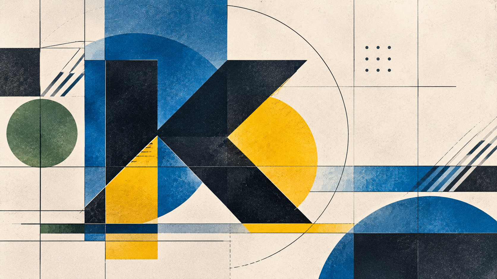

Досліджувати
Не зупинятися на готових відповідях, ставити запитання та відкривати нові можливості.
АВТОР ОСВІТНЬОГО ПРОСТОРУ
Створюю простір, у якому освіта зустрічається з технологіями, а ідеї перетворюються на реальні проєкти.
Ця платформа об’єднує два напрями — «Вартові неба» та Re:Fly. Тут важливі допитливість, практика, творчість і сміливість пробувати нове.
Знайти мене в мережі ↓
K / 2026 IDEAS · EDUCATION · DESIGNНе зупинятися на готових відповідях, ставити запитання та відкривати нові можливості.
Перетворювати знання й натхнення на власні ідеї, візуальні рішення та технологічні проєкти.
Підтримувати цікавість, обмінюватися досвідом і допомагати іншим зростати через практику.
Продовжимо
спілкування?
Стеж за оновленнями, переглядай роботи та пиши мені у зручній соціальній мережі.